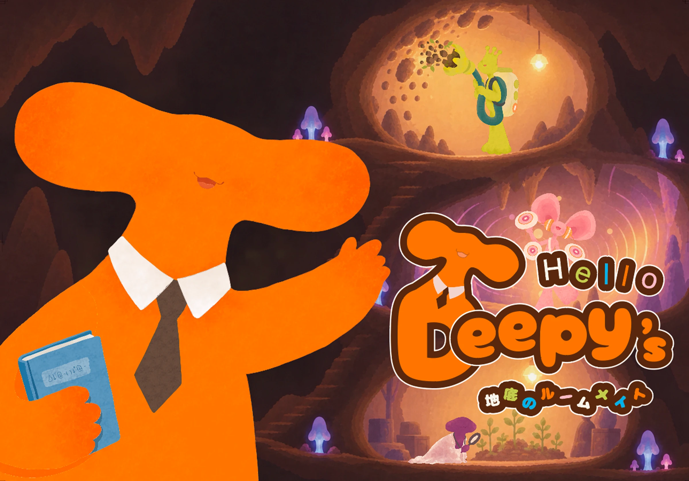
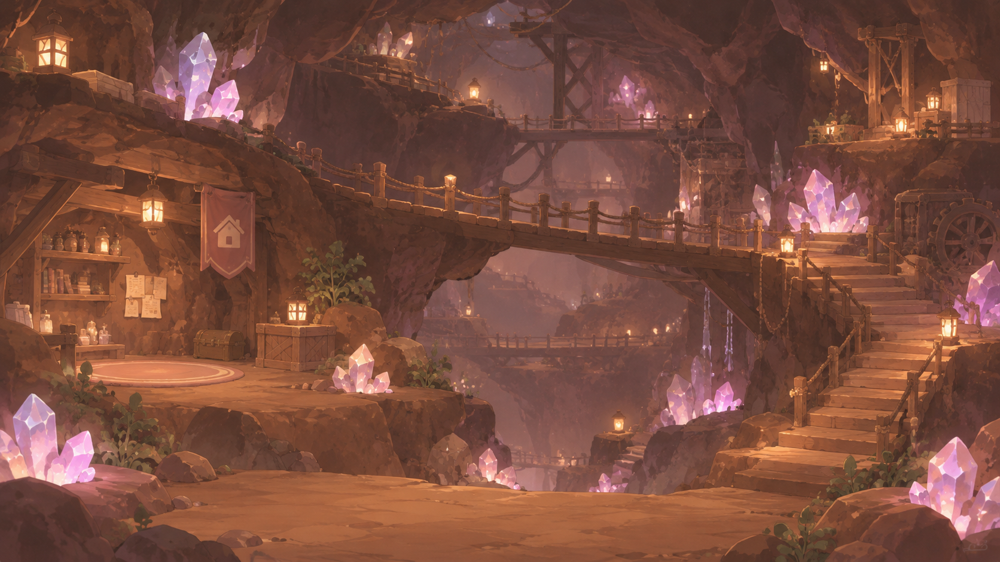

地底人のひみつ
実は、地底人はずっと昔から地球の地下で暮らしていた。
ピラミッドができたのも、地底から石を「よいしょ、よいしょ」と押し上げていた地底人のおかげ……！？
地上と地底の交流
新たに地底人が発見され、人間社会と地底社会の交流を図るために地底人・地上人交流キャンぺーンが行われることになった。

交換留学生として
両者の環境に適合できるか、また文化や生活リズムなどを学び理解を深めるために、あなたは交換留学生として地底へと向かう！！！

DEEPY’s

実は、地底人はずっと昔から地球の地下で暮らしていた。
ピラミッドができたのも、地底から石を「よいしょ、よいしょ」と押し上げていた地底人のおかげ……！？
新たに地底人が発見され、人間社会と地底社会の交流を図るために地底人・地上人交流キャンぺーンが行われることになった。

両者の環境に適合できるか、また文化や生活リズムなどを学び理解を深めるために、あなたは交換留学生として地底へと向かう！！！